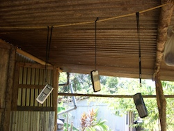

- Title Page
- Introduction
- The Islands and the Anthropologist
- Tsunami and First Response
- Wading In
- Second Tsunami
- In Search of Axes
- Steering a Sustainable Course
- Steering Committee
- Exchange Visit
- Nirnay Means Decision
- Up and Running
- Caritas Leans In
- Singh Sounds a Warning
- Midcourse Correction
- The SOPHIA Experiment
- Taking Stock
- SOPHIA Reports
Up and Running
In December 2005, SIF received its first nirnay from the Nicobars, duly sworn by Ayesha Majid, chairman of the Tribal Council, princess of the realm, and Rasheed’s older sister. It documented the council’s decision to launch four sustainable development projects in partnership with SIF: a network of cooperative fishing and horticultural societies, a student hostel, training for eco-friendly house construction, and staff support for the NYA. The nirnay provided some briefly sketched budget information, target outcomes, and timelines, as SIF had requested at the exchange visit.[43]
Work began on the first two projects right away. In fact, detailed proposals for these undertakings had already been drawn up in Vienna the summer before, in advance of the exchange visit, for purposes of discussion and training, so there were plans the Nicobarese could follow. The cooperative societies were conceived as a way to turn traditional subsistence activities such as fishing, vegetable gardening, and fruit production into cash-producing enterprises that could replace the copra income the Nicobarese had lost to the tsunami. Newly planted coconut palms would not mature for 10-15 years; in the meantime, families could buy shares in their village co-op, provide for their own food security, sell any excess fish or produce to the islands’ 5,000 resident immigrants, and distribute the profits among themselves.
Co-ops were not new to the Nicobarese—several had been registered under a government program in the late 1990s—so it was relatively easy to get buy-in from the islanders, and the NYA soon busied itself with the details of preparing bylaws, opening bank accounts, enrolling families, finding boats, pricing freezers, and calculating energy costs. By the time the SIF Steering Committee met again in February 2006, 11 new coops had been registered, SIF having fronted the necessary share capital (€10,000).[44] It was hoped that this money would be returned to SIF when the co-ops were fully operational; in time, profits would be used to support the NYA.[45] In this way, the entire enterprise would be sustainable.

© Simron Singh
Cell phones suspended for safety
Hostel project. The second project, a student hostel in Port Blair, was established to house and care for 20 Nicobarese youth pursuing secondary education in the territorial capital, about 250 miles away on South Andaman Island. The sustainability of this project lay in building capacity; the benefit of each child’s education would be magnified as the students graduated, went on to higher education and professional training, and returned to the Nicobars as working adults and community leaders who could defend the islands against exploitation. SIF funds paid for rent, food and cutlery, bunks for the girls’ and boys’ dormitories, transportation to school, and the services of a house mother; the education itself was free in the government schools. When Singh paid a visit to the hostel in March 2006, he found all in order and was pleased to report that two of the children had represented the Nicobarese Islands in the grand Republic Day Parade in New Delhi two months earlier.[46]
The legwork for both these projects was provided by a team of nine NYA staff members who worked under Rasheed’s direction. Though the staffers were unpaid after Oxfam left in December, they didn’t seem to mind. In fact, they showed a lot of interest in both government and SIF projects, and Ramanujam was busy handling petitions, registration forms, loan applications, and bank drafts on their behalf. Efforts to teach the Nicobarese how to handle such matters themselves were not very successful, but Ramanujam was pleased that some NYA staff were picking up computer skills; a few could even manage Word documents and Excel spreadsheets.[47] Rasheed soon asked SIF to pay for a computer and printer, as well as for salaries, petty cash, and refreshments.[48] The NYA seemed to be settling in for the long haul.
[43] Ayesha Majid, chairperson of the Nancowrie Tribal Council, “Minutes of the Meeting of the Tribal Council … [Nirnay I],”November 25, 2005, in SIF files. The eco-housing project never came to fruition.
[44] Share capital was paid from SIF funds only to families who had not received cash compensations from the government for loss of kin, land, or other resources during the tsunami; people with cash reserves were asked to pay their own way in the spirit of thrift and sustainability. “Project Proposal: Supporting the Establishment of a Cooperative Structure,” June 2005, in SIF files.
[45] SIF found the co-ops particularly attractive because they were wholly owned and operated by the native peoples, and the Nicobarese could seek their own marketing outlets, keeping them out of the hands of middleman traders who had taken advantage of them in the past. Ibid.
[46] The hostel program was more ambitious than it might seem to outsiders because, for cultural reasons, most Nicobarese were “indifferent to education,” especially education as conducted in government-run schools. “Project Proposal: Capacity Building Through Education for Nicobarese in Port Blair,” June 2005, in SIF files.
[47] “Venkat Ramanujam, “Activity Report,” [Fall 2005 or Winter 2006], in SIF files.
[48] Rasheed Yusuf, Letter to Brigitte Vettori, SIF staff in Vienna, January 24, 2006, in SIF files.